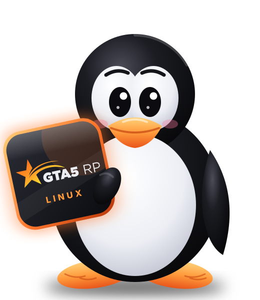

GTA5RPна Linux
Открытый лаунчер, который находит GTA V и Proton, готовит RAGE:MP и пускает на сервер 5RP одной кнопкой «Играть».
Оригинальный интерфейс 5RP — в новом оформлении: живой фон под каждый сервер, шесть тем с анимацией и Linux-настройки. Есть такая же красивая версия для Windows.
Открытый кодSteam + Proton6 темWindows тоже
GitHub repositoryalinaz18/gta5rp-launcher-linux↗
Смотреть, как это выглядит ↓

ПлатформыCachyOSArchUbuntuMintFedoraDebianWindows 10/11